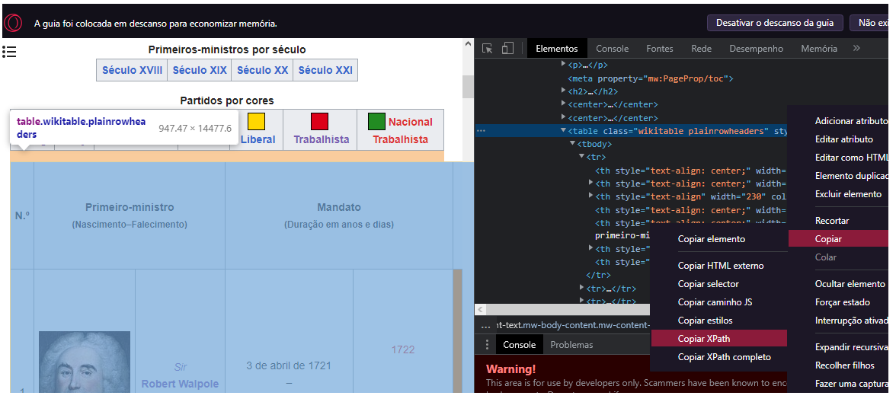
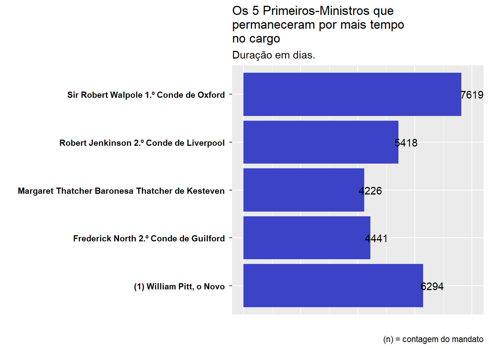
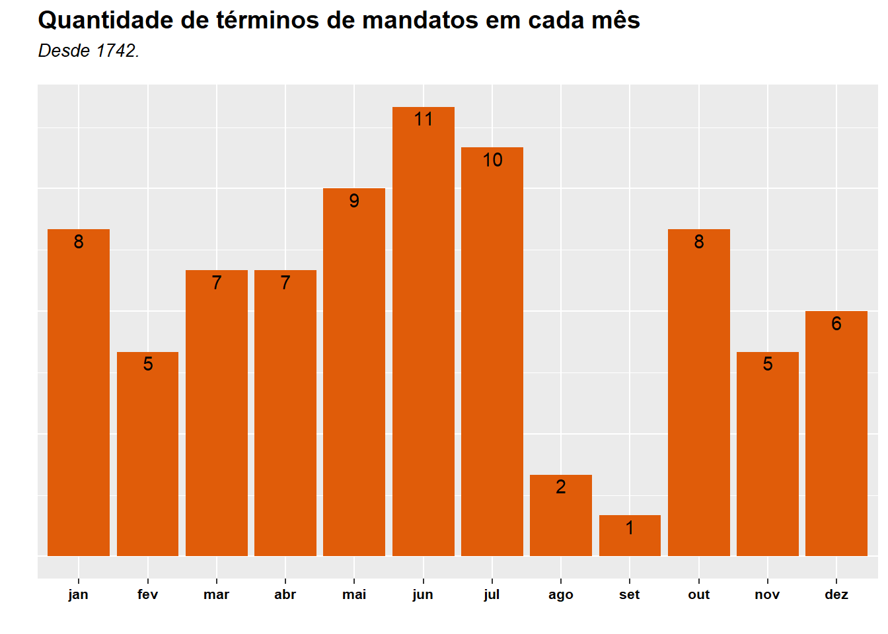
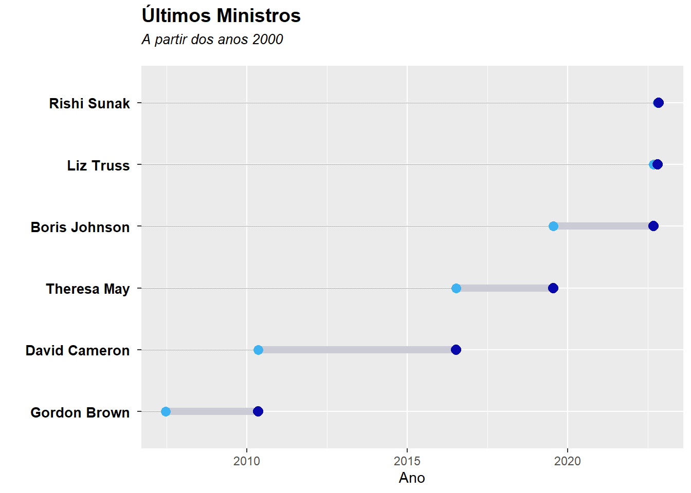
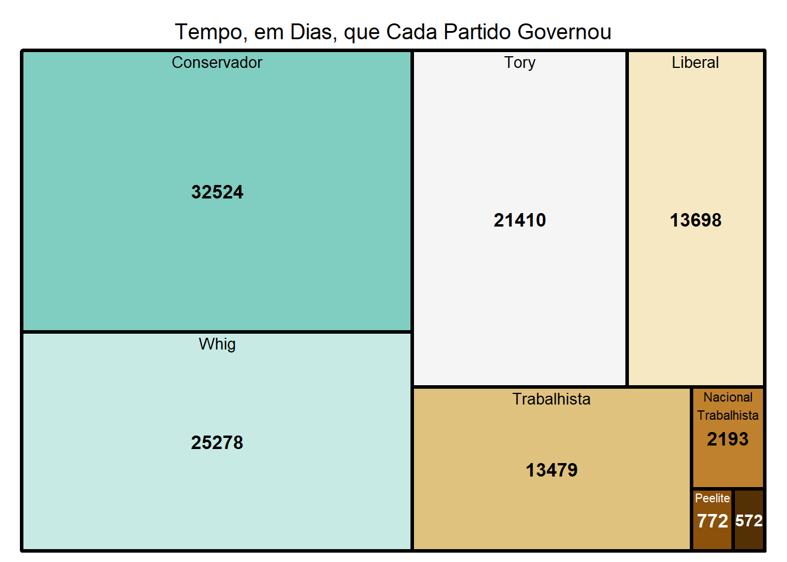

Introdução
Venho me interessando pelo tema de raspagem de dados (Web Scraping) e resolvi trazer exemplo “simples” de como faze-lo. A ideia aqui é extrair os dados da página da Wikipédia, realizar o tratamento e fazer análise exploratória.
Tema
Recentemente houve a troca do primeiro ministro do Reino Unido a premiê Liz Truss, sendo destacada por ser a que ficou menos tempo no cargo, foi substituída por Rishi Sunak. Esse video da BBC conta um pouco de quem foi Liz Truss e como foi seu governo.
Bibliotecas
Carregando os dados
Para carregar os dados é necessário o Link da página da wikipédia e a tag da tabela. Para fazer isso basta clicar com o botão direito próxima a tabela desejada e escolher a opção inspecionar elemento, em seguida identificar tag da tabela e copiar seu XPath como mostra a figura 1.

Com essas informações podemos fazer a extração.
Podemos verificar o tipo de estrutura.
class(dados)[1] "tbl_df" "tbl" "data.frame"Podemos inspessionar os nomes das colunas e os tipos de dados que estão presentes.
colnames(dados) [1] "N.º"
[2] "Primeiro-ministro (Nascimento–Falecimento)"
[3] "Primeiro-ministro (Nascimento–Falecimento)"
[4] "Mandato (Duração em anos e dias)"
[5] "Mandato (Duração em anos e dias)"
[6] "Partido"
[7] "Partido"
[8] "Cargos ministeriais ocupados como primeiro-ministro"
[9] "Monarca (Reino)"
[10] "Ref." glimpse(dados)Rows: 188
Columns: 10
$ N.º <chr> "1", "1", "1", "~
$ `Primeiro-ministro (Nascimento–Falecimento)` <chr> "", "", "", "", ~
$ `Primeiro-ministro (Nascimento–Falecimento)` <chr> "Sir Robert Walp~
$ `Mandato (Duração em anos e dias)` <chr> "3 de abril de 1~
$ `Mandato (Duração em anos e dias)` <chr> "1722", "1727", ~
$ Partido <chr> "", "", "", "", ~
$ Partido <chr> "Whig", "Whig", ~
$ `Cargos ministeriais ocupados como primeiro-ministro` <chr> "Chanceler do Te~
$ `Monarca (Reino)` <chr> "Jorge I (1714–~
$ Ref. <chr> "[20]", "[20]", ~Aqui termina a parte simples.
Tratamento
Nem sempre os dados estão estrurados do jeito que gostariámos (aliás quase nunca está). O Dataframe obtido está bagunçado então precisamos realizar uma “faxina”, padronizando as linhas e colunas.
# |message: false
# |warnings: false
dados %>% head(3) %>% knitr::kable(caption = "A Tabela Original")| N.º | Primeiro-ministro (Nascimento–Falecimento) | Primeiro-ministro (Nascimento–Falecimento) | Mandato (Duração em anos e dias) | Mandato (Duração em anos e dias) | Partido | Partido | Cargos ministeriais ocupados como primeiro-ministro | Monarca (Reino) | Ref. |
|---|---|---|---|---|---|---|---|---|---|
| 1 | Sir Robert Walpole 1.º Conde de Orford (1676–1745) | 3 de abril de 1721 – 11 de fevereiro de 1742 | 1722 | Whig | Chanceler do TesouroPrimeiro Lorde do TesouroLíder da Câmara dos Comuns | Jorge I (1714–1727) | [20] | ||
| 1 | Sir Robert Walpole 1.º Conde de Orford (1676–1745) | 3 de abril de 1721 – 11 de fevereiro de 1742 | 1727 | Whig | Chanceler do TesouroPrimeiro Lorde do TesouroLíder da Câmara dos Comuns | Jorge II (1727–1760) | [20] | ||
| 1 | Sir Robert Walpole 1.º Conde de Orford (1676–1745) | 3 de abril de 1721 – 11 de fevereiro de 1742 | 1734 | Whig | Chanceler do TesouroPrimeiro Lorde do TesouroLíder da Câmara dos Comuns | Jorge II (1727–1760) | [20] |
Não existe uma regra para realizar essa operação, a única certeza é que vai ser mais trabalhoso do que você pensou.
O que me ajudou bastante foi desenhar e/ou imaginar a tabela final e fazer o simples mesmo que pareça preguiçoso, o importante é estar correto. Neste processo tem que ter paciência, pois uma operação equivocada (ou incompleta) pode ajudar a resolver um problema de um conjunto de linhas e simultaneamente prejudicar outro conjunto.
Sempre é importante verificar a tabela após cada operação, mas uma coisa é inspessionar um Dataframe de 100 linhas, é mais facíl monitorar os erros, outra é inspessionar um Dataframe de 50000 linhas. Então tenha cuidado e bom senso.
O processo é literalmente um aprendizado, ao longo do caminho você já sabe o que precisa ser descartado (seja linhas ou colunas), as micro alterações (ajustes específicos), as macro alterações (as mais perigosas) e que operações cada coluna necessita. Esse processo te aproxima do resultado que você espera.
Mão na massa
Existem colunas com nomes idênticos mas informações diferentes.
df <-dados %>% select(c(1,3,4,7,8)) %>% #selecionei as colunas de interesse
rename(
c('ministro'='Primeiro-ministro (Nascimento–Falecimento)')'mandato'='Mandato (Duração em anos e dias)'as)',
'cargo' ='Cargos ministeriais ocupados como primeiro-ministro')) %>% #renomeando as colunas
filter(!grepl('dias',mandato)) %>% # eliminei as linhas que estão poluindo
distinct() %>% # eliminei as linhas iguais
slice(-80) #eliminei a última linha manualmenteeAgora quero colocar as datas em um formato em que o R interprete.
# | message: false
# Separando as colunas para obter dia,mês e ano do início e fim de mandatoto
df %<>% separate(InicioMandato,
c("DiaIM","MesIM","AnoIM"),
sep ="de ",
remove = T)
df %<>% separate(FimMandato,
c("DiaFM","MesFM","AnoFM"),
sep ="de ",
remove = T)Warning: Expected 3 pieces. Missing pieces filled with `NA` in 1 rows [79].# obtendo um valor numérico dos mesess
df %<>% mutate(MesIM = case_when(
MesIM == "janeiro " ~ 1,
MesIM == "fevereiro " ~ 2,
MesIM == "março ""~~33,
MesIM == "abril " ~ 4,
MesIM == "maio " ~ 5,
MesIM == "junho " ~ 6,
MesIM == "julho " ~ 7,
MesIM == "agosto " ~ 8,
MesIM == "setembro " ~ 9,
MesIM == "outubro " ~ 10,
MesIM == "novembro " ~ 11,
MesIM == "dezembro " ~ 12
),
MesFM = case_when(
MesFM == "janeiro " ~ 1,
MesFM == "fevereiro " ~ 2,
MesFM == "março ""~~33,
MesFM == "abril " ~ 4,
MesFM == "maio " ~ 5,
MesFM == "junho " ~ 6,
MesFM == "julho " ~ 7,
MesFM == "agosto " ~ 8,
MesFM == "setembro " ~ 9,
MesFM == "outubro " ~ 10,
MesFM == "novembro " ~ 11,
MesFM == "dezembro " ~ 12))É necessário uniformizar os dados, pois o espacinho em branco atrapalha as operações
df$AnoIM <- df$AnoIM %>% str_replace_all(" ","")
df$AnoFM <- df$AnoFM %>% str_replace_all(" ","")Agora podemos unir as colunas criadas para formar a data completa.
# União das colunas
df %<>% unite("Data_Inicio_Mandato",
c("AnoIM","MesIM","DiaIM"),
sep = "/")
df %<>% unite("Data_Fim_Mandato",
c("AnoFM","MesFM","DiaFM"),
sep = "/")
# convertendo para o formato de datas
df$Data_Inicio_Mandato %<>% as.Date() # convertendo
df$Data_Fim_Mandato %<>% as.Date()
df$Data_Fim_Mandato[is.na(df$Data_Fim_Mandato)] <- now() # como o ministro ainda está em exercício colocamos o dia atual como último dia. a. Com o novo formato podemos obter a duração dos mandatos.
Aqui estão as alterações simples e preguiçosas. São modificações tão específicas que é mais viável fazer a alteração manual do que buscar um método mais elaborado.
Neste caso eram erros de ortografia e referências.
df$ministro[df$ministro == "Sir Robert Walpole 1.º Conde de Orford (1676–1745)"])<- "Sir Robert Walpole 1.º Conde de Oxford (1676–1745)"1745)"
df$ministro[df$ministro == "William Pitt, o Velho 1.º Conde de Chatham[a](1708–1778)"])<-"William Pitt, o Velho 1.º Conde de Chatham (1708–1778)"1778)"
df$ministro[df$ministro == "(1) William Pitt, o Novo[b](1759–1806)"]"<-"(1) William Pitt, o Novo (1759–1806)"06)"
df$ministro[df$ministro == "(2) Benjamin Disraeli 1.º Conde de Beaconsfield[c](1804–1881)"])<-"(2) Benjamin Disraeli 1.º Conde de Beaconsfield (1804–1881)"1881)"
df$ministro[df$ministro == "Alec Douglas-Home Barão Home de Hirsel[d](1894–1986)"])<-"Alec Douglas-Home Barão Home de Hirsel (1894–1986)"1986)"Agora com a tabela uniformizada podemos extrair um conjunto de caracteres utilizando expressões regulares (Regex). Neste caso queremos identificar e remover o padrão “(Ano de Nascimento - Ano de Falecimento)”
df$ministro <- df$ministro %>% str_replace_all("[(][0-9]{4}[–][0-9]{4}[)]|[(][0-9]{4}[)]","")Finalmente temos a tabela tratada.
| N.º | ministro | Data_Inicio_Mandato | Data_Fim_Mandato | Partido | cargo | duracao |
|---|---|---|---|---|---|---|
| 1 | Sir Robert Walpole 1.º Conde de Oxford | 1721-04-03 | 1742-02-11 | Whig | Chanceler do TesouroPrimeiro Lorde do TesouroLíder da Câmara dos Comuns | 7619 days |
| 2 | Spencer Compton 1.º Conde de Wilmington | 1742-02-16 | 1743-07-02 | Whig | Primeiro Lorde do Tesouro | 501 days |
| 3 | Henry Pelham | 1743-08-27 | 1754-03-06 | Whig | Chanceler do TesouroPrimeiro Lorde do TesouroLíder da Câmara dos Comuns | 3844 days |
| 4 | (1) Thomas Pelham-Holles 1.º Duque de Newcastle | 1754-03-16 | 1756-11-11 | Whig | Primeiro Lorde do TesouroLíder da Câmara dos Comuns | 971 days |
| 5 | William Cavendish 4.º Duque de Devonshire | 1756-11-16 | 1757-06-29 | Whig | Primeiro Lorde do TesouroLíder da Câmara dos ComunsLorde Alto Tesoureiro da Irlanda | 225 days |
| 6 | (2) Thomas Pelham-Holles 1.º Duque de Newcastle | 1757-06-29 | 1762-05-26 | Whig | Primeiro Lorde do TesouroLíder da Câmara dos Comuns | 1792 days |
Visualizações
Quem passou mais tempo no cargo?
# |message: false
# |warnings: false
texto <- paste(
strwrap("Os 5 Primeiros-Ministros que permaneceram por mais tempo no cargo",
30),
collapse = "\n")
df %>% arrange(desc(duracao)) %>%
slice(1:5) %>%
ggplot(
aes(x = duracao,
y =ministro,
label = duracao)) +
geom_col(fill ="#3c43c7", size=0.05) +
geom_text(position = position_stack(vjust =1.05),
color="#030202") +
labs(title = texto,
subtitle = "Duração em dias.".",
caption = "(n) = contagem do mandato",
y = "",
x ="" ) +
theme(axis.text.x = element_blank(),
axis.ticks.x=element_blank(),
axis.text.y =element_text(face ="bold",
colour = "#030202"))Don't know how to automatically pick scale for object of type difftime. Defaulting to continuous.
Don't know how to automatically pick scale for object of type difftime. Defaulting to continuous.
Don't know how to automatically pick scale for object of type difftime. Defaulting to continuous.
Em que mês costuma terminar os mandatos?
df %>% group_by(mes = month(Data_Fim_Mandato, label = TRUE)) %>% summarise(contagem =n()) %>%
ggplot(aes(x =mes,y =contagem, label = contagem ))+
geom_col(fill ="#e05c09") +
geom_text(vjust = 1.25) +
labs(title = "Quantidade de términos de mandatos em cada mês"s",
subtitle = "Desde 1742.", y ="",x="") +
theme(axis.text.y = element_blank(),
axis.ticks.y= element_blank(),
axis.text.x = element_text(face ="bold",size =8,
colour = "#030202"),
plot.title = element_text(face ="bold", size = 14),
plot.subtitle = element_text(face = "italic", size = 10,
margin = margin(b = 0.5, unit = "cm")))
Últimos ministros que passarem pelo cargo.
df%>% filter(Data_Inicio_Mandato > "2000-01-01") %>%
mutate(
mandato_or = fct_reorder(ministro,Data_Inicio_Mandato))%>%
ggplot((aes(x=Data_Inicio_Mandato,xend = Data_Fim_Mandato,y = mandato_or))) +
geom_dumbbell(size =2.5,color="#cbcbd6",colour_x ="#3eb2f0",
colour_xend = "#0909ab",dot_guide=TRUE,
dot_guide_size=0.25) +
labs(x ="Ano",y = "",title = "Últimos Ministros"",
subtitle = "A partir dos anos 2000") +
theme(plot.title = element_text(face ="bold", size = 14),
plot.subtitle = element_text(face = "italic", size = 10,
margin = margin(b = 0.5, unit = "cm")),
axis.text.y = element_text(face ="bold",size =10,
colour = "#030202"))
Qual partido mais governou?
df %>% group_by(Partido) %>%
summarise(Tempo = as.numeric(sum(duracao))) %>%
treemap(index = c("Tempo","Partido"),vSize = "Tempo",
align.labels=
list(c("center", "center"),c("center", "top")),
title = "Tempo, em Dias, que Cada Partido Governou",
fontsize.labels=c(12,10),
palette = "BrBG") 
Alguns partidos foram dissolvidos ou fundidos a outros partidos como por exemplo:
Tory ⟹ Partido Conservador
Wing ⟹ Partido Liberal
Sugestão
Uma boa ideia é extrair os títulos reais da coluna de ministros para realizar análises. Uma coluna que acabou não sendo utilizada é a de cargo, os cargos são strings que estão “coladas” uma na outra o desafio é separa-las